From chat-thread orders and gut feel to a weekly plan
Small food businesses rarely have a data team. Our partner, a small bakery and café, decided how much to bake and what to buy from experience, and counted stock on paper, and took custom cake orders through calls, texts and chat messages. That meant wasted product on slow days, sold-out items on busy ones, and orders that were easy to lose.
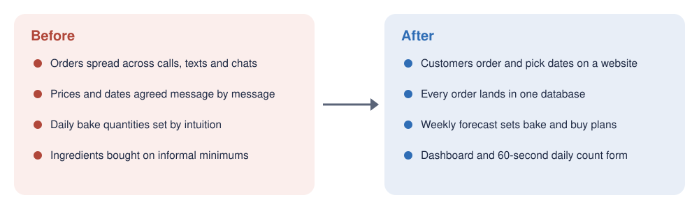
Demand forecast
Weekly units for each best-selling item, with a likely range and a green, amber or red rating.
Inventory Capture
A phone scan replaces a paper stock count, one clean row per scan.
Inventory rules
A replenishment policy for each ingredient class, turned into shopping lists.
Dashboard
Sales trends and what to prepare, in one view for the owner.
Ordering site
Custom cake orders arrive structured, with a two-factor admin portal.
Growth made gut-feel planning risky
Overproduction means waste and underproduction means lost sales, while staffing doesn’t follow real demand. Ingredients were bought on informal minimums with no records, and the owner’s decorating time, not oven capacity, limited how many custom orders could be accepted.
Business needs
- One place to track every order and its pickup date
- A demand forecast for the café’s main items
- Structured data for buying supplies on time
- A clear view of busy and slow periods for staffing
Framed with a consulting-case structure (clarify, structure, recommend) and a four-step system-design process (scope, design, deep dive, wrap-up).
Two proprietary sources and one new one we built
In collaboration with a small bakery-café, we worked with data provided by the owners. None of it is published here.
| Source | What it covers | Used for |
|---|---|---|
| Café point-of-sale export | About 18,000 sales lines over 20 months, more than 100 menu items in 15 categories | Weekly forecast, sales patterns |
| Recipe and ingredient file | Ingredient list and measured recipes for the custom cake flavors | Ingredient planning |
| Stock scans (new) | One row per scan from the Inventory Capture app | Inventory rules, production plan |
| Website orders (new) | Structured custom cake orders from the site we built | Future forecasting of custom orders |
Preparation. Sales were aggregated into an item-by-week panel and zero-filled. Volumes are scaled to the café’s five-day week, a trailing partial week is dropped (left in, it made the forecast about 55% too low), and two one-off event weeks are excluded.
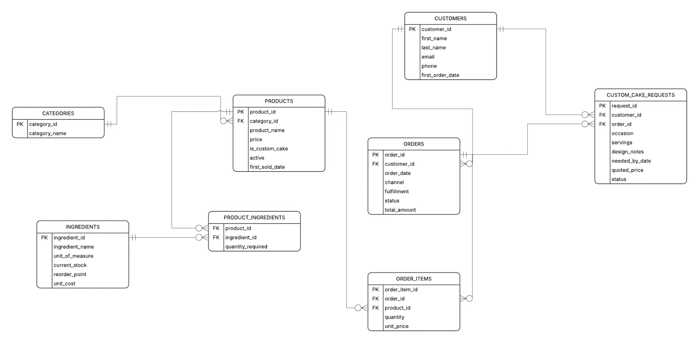
Data foundation: one shared database
Sourabh Salunke · database, data cleaning and inventory layer
The partner supplied exports as CSV files. Instead of each of us working from a different copy, they were loaded into one Supabase (PostgreSQL) database and cleaned with SQL inside it. The whole team now works from the same, consistent source, and the raw files never enter this repository.
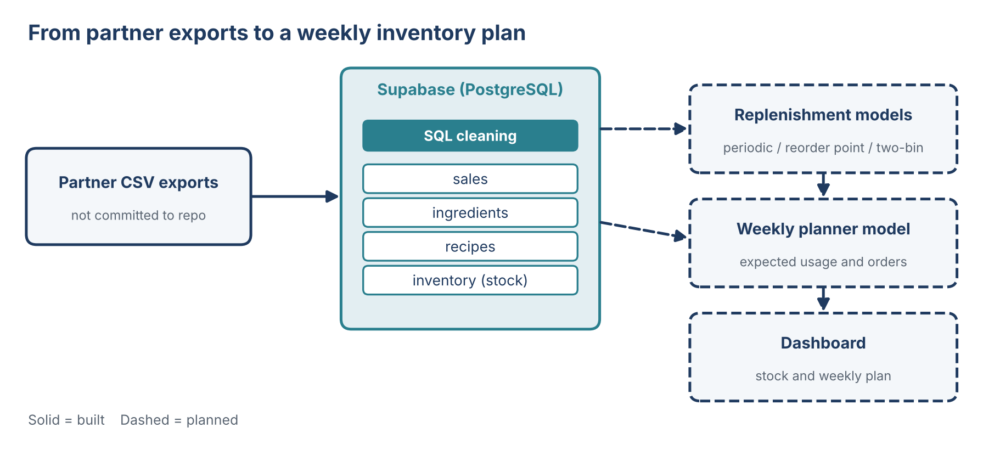
On top of the sales tables he added an inventory layer:
- Ingredients: each ingredient’s group, shelf life, estimated cost, lead time, replenishment rule and current stock.
- Recipes (in progress): how much of each ingredient every menu item uses.
Why the recipes table matters. The forecast predicts items, but the bakery buys ingredients. The recipes table is the bridge: if the forecast says 100 lattes next week and a latte uses 8 oz of milk, the planner knows to expect about 800 oz of milk. Comparing that expected usage with current stock gives the weekly order plan.
Each ingredient follows one of three buying rules, chosen by how fast it spoils and how long it takes to arrive: periodic review for fresh dairy, reorder point for coffee beans and tea, and a visual two-bin rule for packaging (see the inventory framework below).
Next: the SQL cleaning query, the completed recipes table, the weekly planner model, the replenishment rules as backtested Python models, and a dashboard on this site. Ingredient costs are rough estimates until the partner supplies real figures.
Inventory Capture: a phone scan replaces a paper count
Abhishek Roushan · barcode scanner app
Stock used to be counted on paper and typed into a sheet later, if at all. The scanner is a web app that turns any phone into a stock scanner: staff scan a product, confirm the quantity and an optional expiry date, and the scan is saved as one row, even offline. Stock data now arrives clean, timestamped and ready to plan production from.
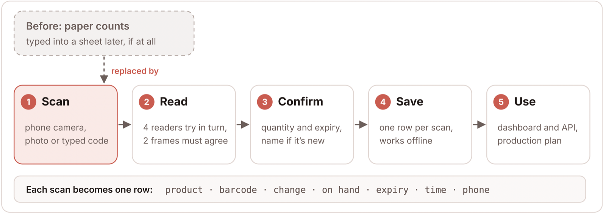
One product, one number
A retail barcode (UPC-A in the US, EAN-13 elsewhere) ends in a check digit, so a misread almost always fails the math. The same product can be reported as a 12-, 13- or 14-digit number, so the app converts every read to one standard form: one product is always one row, never three.
Failsafes
Four reading engines are tried in order (the phone’s built-in reader, ZXing in WebAssembly, ZXing in JavaScript, Quagga2). A number only counts when two camera frames agree, and each scan has a unique ID so a retry is never counted twice. If a label won’t scan, staff type the number or add the item with a photo.
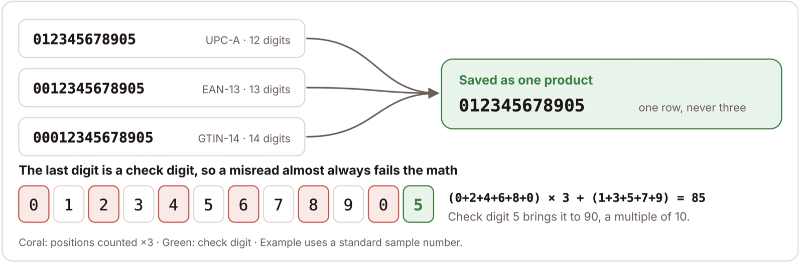
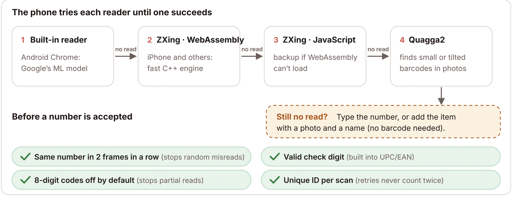
Free product data. Product names come from USDA FoodData Central and Open Food Facts, looked up once and remembered. With a free database plan and free hosting, this replaces lookup services that start at about $99 a month. Built for staff, set by the owner: big buttons, a beep on every read, one-tap expiry dates, and an admin page for the app’s name, logo, colors and which features staff can use.
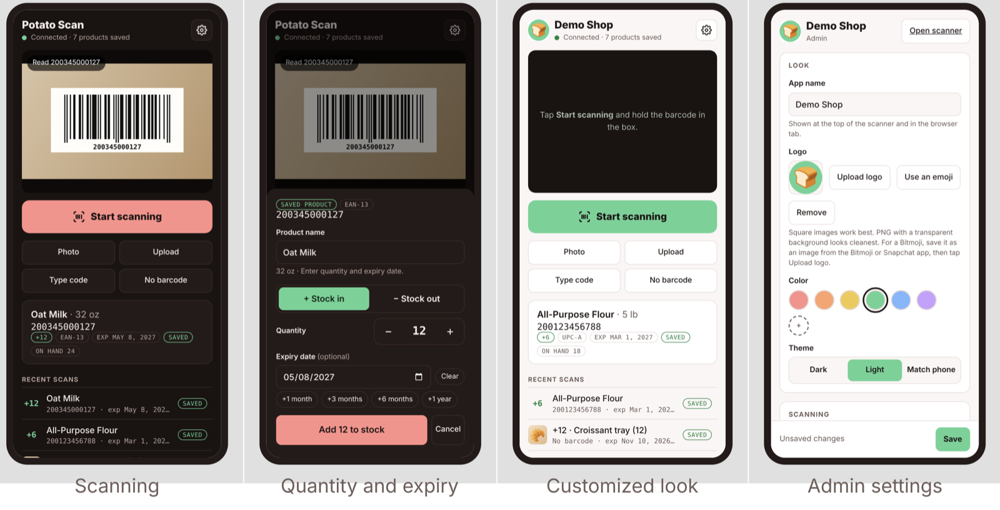
We show the tool, never what it scanned: product lists, scan history, item photos and database keys stay private.
Four connected pieces
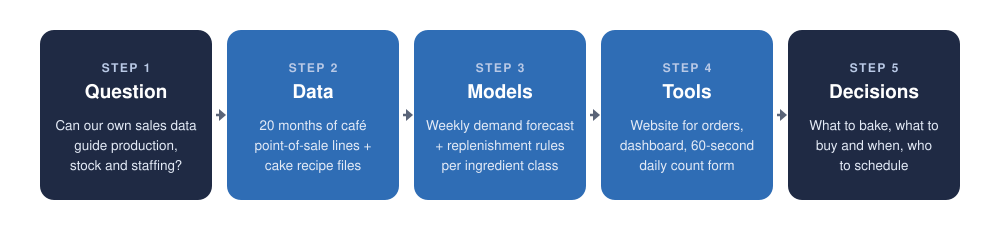
1 · Demand forecast
Mohinuddin Shaikh · demand forecasting: method, evaluation, reproducibility
The forecast works in two steps. First, it predicts total weekly units for the whole café as the average of the last 12 normal weeks. Second, it splits that total across items using each item’s average share of sales over the same 12 weeks. For weeks further ahead, each new forecast is added to the history and the average recalculated, so one rule covers any number of weeks.
The total comes first because single items are noisy: an item that sells five a week can easily sell three or eight by chance, while the café’s total is much steadier. This is top-down forecasting, and the item forecasts always add up to the total. Weeks are made comparable first: scaled to five trading days, short weeks set aside, one-off event weeks left out.
Each forecast comes with a likely range (the 5th to 95th percentile of the model’s own past errors) and a green, amber or red rating that says whether to plan from the number, from the range, or with a fixed stock level. It was tested with a walk-forward evaluation: from each past week, forecast up to 12 weeks ahead using only earlier data, then compare with what actually sold.
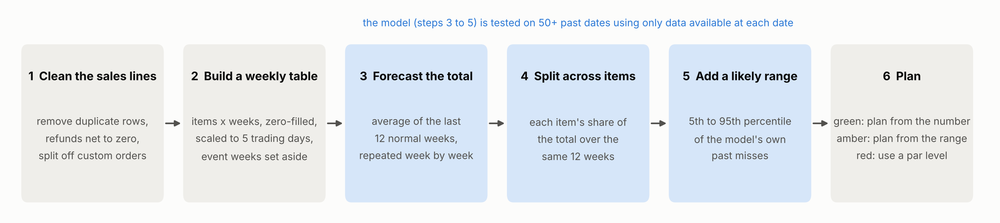
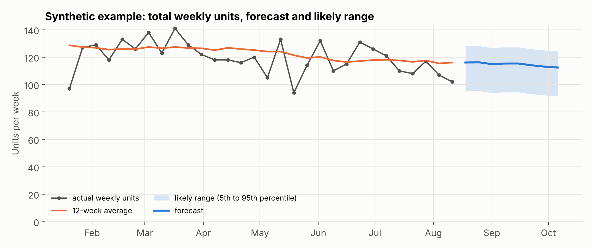
WAPE (weighted absolute percentage error): all the units the forecast missed by, divided by all the units actually sold. 36.9% means that for every 100 items sold, the forecast was off by about 37 in total. Walk-forward test: we pretend to stand at many past weeks, forecast using only what was known then, and compare with what really sold. This tests the model the way it will be used.
2 · Inventory framework: from forecast to purchase orders
Sun Xuan · inventory models, replenishment logic and procurement pipeline
The forecast says how many lattes or pastries will sell. The bakery, though, buys milk by the gallon, beans by the bag and cups by the case. This framework turns predicted sales into exact order quantities, while respecting shelf life, supplier lead times and minimum order sizes.
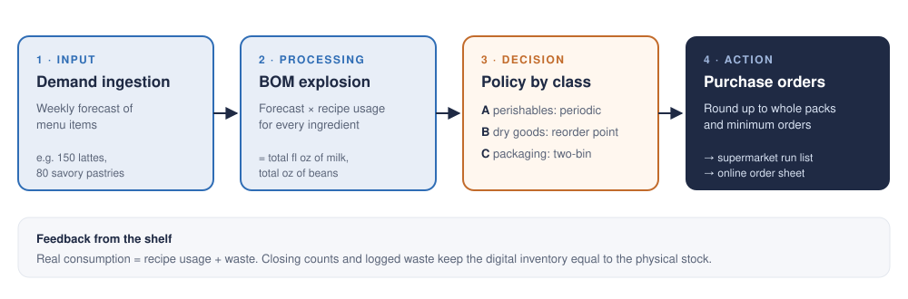
- Demand ingestion. Read next week’s forecast for each menu item, for example 150 lattes.
- BOM explosion. A bill of materials (the recipe table) says how much of each ingredient one item uses. Multiplying forecast by recipe gives total ingredient demand, such as fluid ounces of milk or ounces of beans.
- Policy by class. Each ingredient goes through the buying rule that fits how fast it spoils and how long it takes to arrive (table below).
- Purchase orders. Quantities are rounded up to whole packs and minimum orders (10.6 gallons of milk becomes 11) and split by where they are bought: a supermarket run list and an online order sheet.
| Class | Examples | Rule | Why |
|---|---|---|---|
| A · Perishables | Milk, dairy | Periodic review at fixed times (e.g. twice a week): order Q = max(0, T − I), with T = (P + L)·d + S | Buys only what covers the next cycle, so less spoils |
| B · Core dry goods | Coffee beans, tea | Reorder point: order when stock falls to ROP = d·L + SS | A safety buffer covers shipping delays, so they never run out |
| C · Packaging, drinks | Cups, lids, straws, cans | Two-bin / red line: opening the second bin triggers a reorder | No counting or data entry for cheap, bulky items |
d = average daily demand · P = time between reviews · L = supplier lead time · I = stock on hand · S, SS = safety stock · T = order-up-to level
Keeping it honest. Real consumption is recipe usage plus waste, so staff log closing counts and waste (expired milk, coffee used to calibrate the grinder). New stock goes behind old stock (first in, first out) and open dairy gets a use-by label.
Why it matters. Staff no longer track every item by hand, perishables are topped up precisely instead of by habit, and core items have a buffer against stockouts. It runs today in free tools (Google Sheets and Forms) and moves directly onto the shared database (Fig. 2b), with counts from the scanner.
3 · Dashboard
Sourabh Salunke · data cleaning, dashboard and reporting
Planned: a dashboard on this site that shows current stock levels and the weekly order plan, reading directly from the shared database (Fig. 2b), so the owner sees what is on the shelf and what to buy in one place.
4 · Online ordering system
Santiago Velasquez · ordering website: front end, back end and admin portal
The problem it solves. Custom cake orders had no data at all: they arrived by calls, texts and chat messages, so details got lost, prices were worked out by hand each time, and there was no record to learn from. The website replaces those threads with one guided ordering process, and every order is saved in the same structured format (the tables in Fig. 2). That gives the business, and our forecast, a clean source of custom-order data for the first time.
How a customer orders.
- Choose a cake in one of three ways: a ready-made cake from the shop, a cake designed in the seven-step builder, or a quote request for anything unusual.
- See the price at every step. The builder draws the cake as it is designed and updates the total with each choice, so there is no back-and-forth about cost.
- Pick a pickup date. The calendar greys out days that are too soon (cakes need a week’s notice) and stripes the days the owner has blocked.
- Send the order. Before saving, a function in the database checks it again: current prices, item still offered, enough notice and date still open. A customer can’t change a price in the browser and get it accepted.
- The owner answers from a private admin portal that needs a password plus a code from an authenticator app. They see orders on a calendar, accept or decline, and block days off. The customer gets an email automatically.
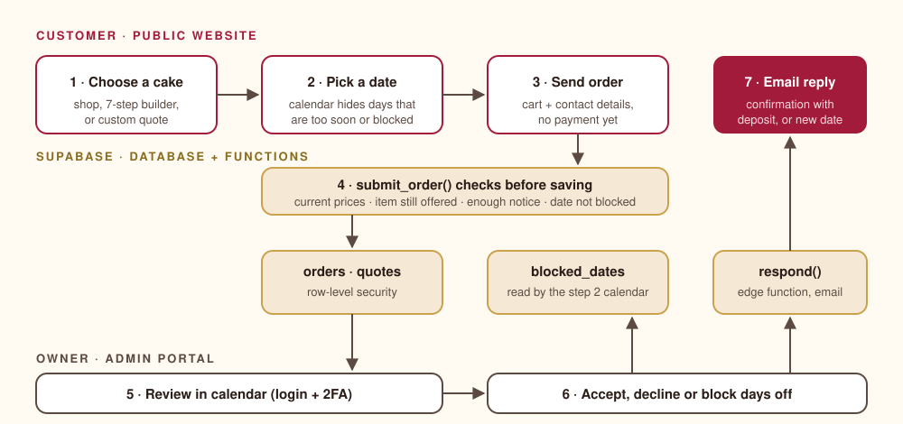
Screenshots of the site
Taken from the demo version, which uses a placeholder bakery name, drawn cake images and sample prices. Click any image to see it full size.

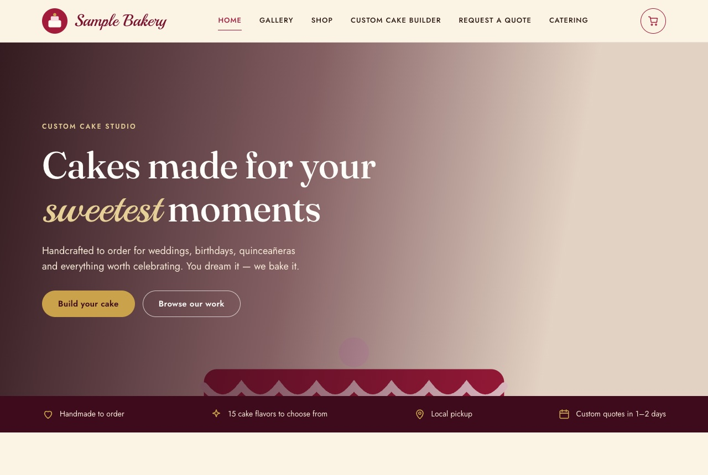

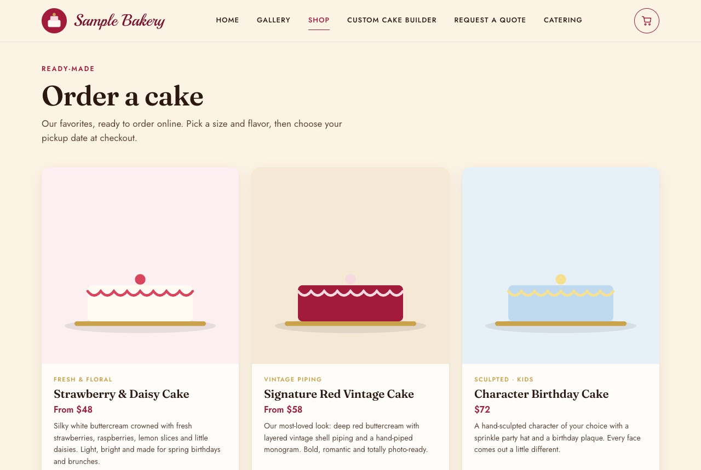

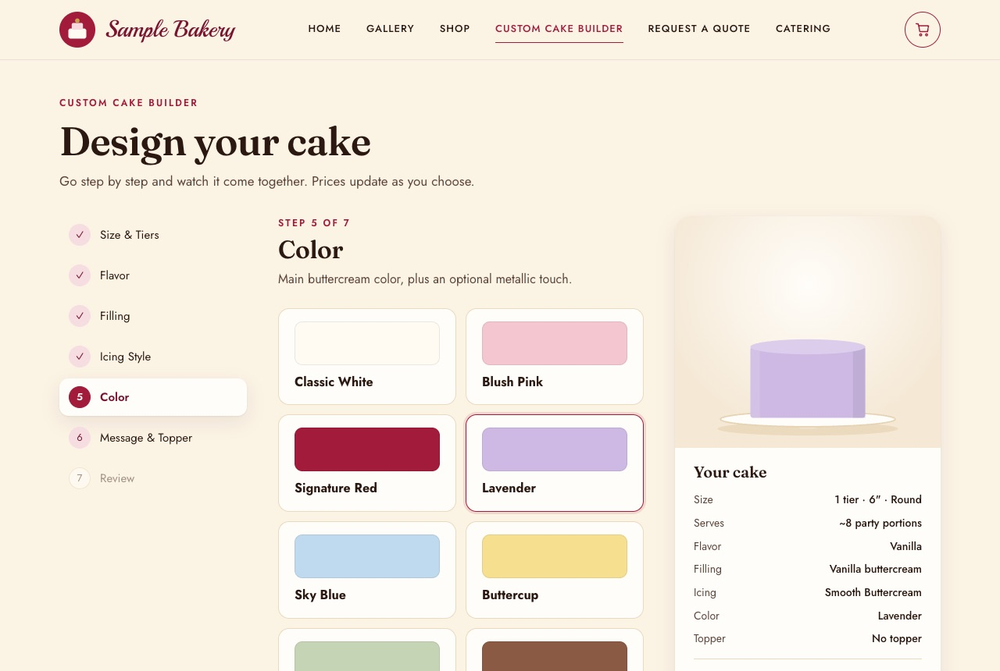

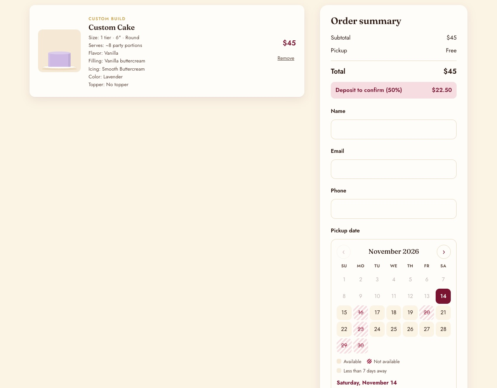

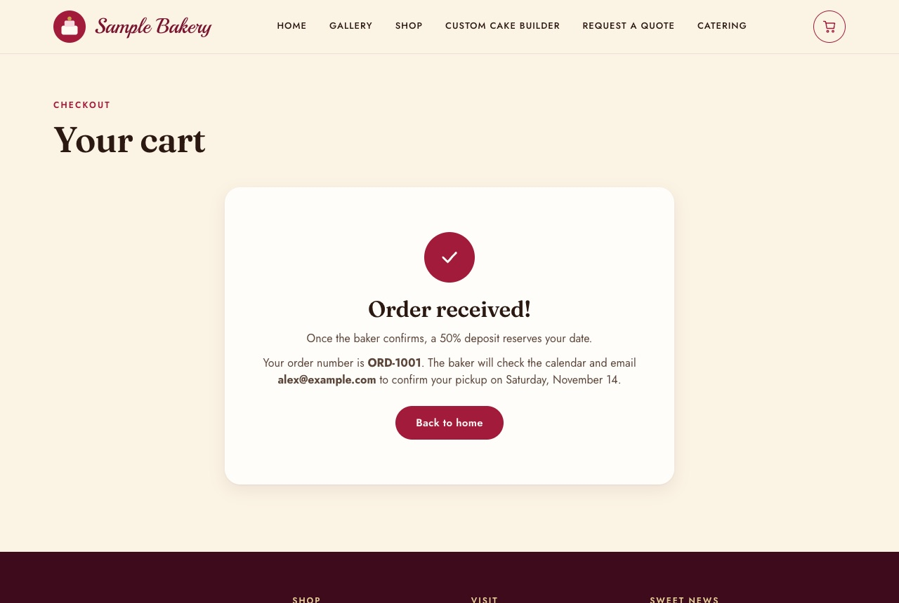

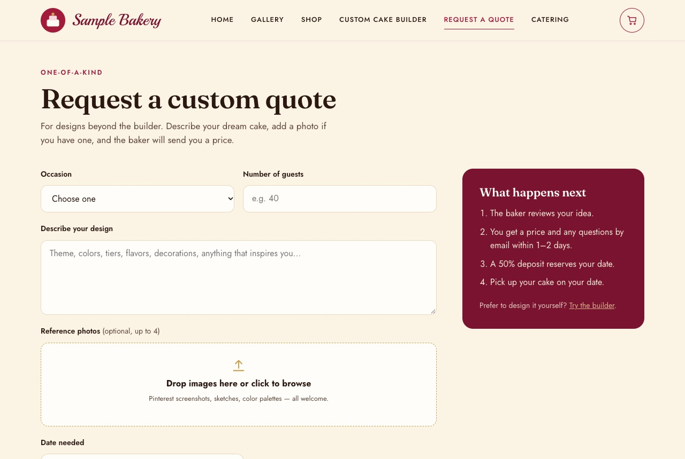
The admin portal isn’t pictured: it only works with a real login and would show real customer orders.
How it’s built
| Part | Technology | What it does |
|---|---|---|
| Front end | HTML, CSS and plain JavaScript | The pages customers use. Works on phones and computers, no app to install. |
| Database | Supabase (PostgreSQL) | Stores products, orders, quotes and blocked days. |
| Order checks | Database functions (RPC) | Re-check prices, notice and dates before an order is saved. |
| Security | Row-level security, two-factor login | Customers can only send orders, never read them. Only the owner, after password and app code, can see them. |
| Emails | Edge function | Sends the confirmation or decline message when the owner answers. |
Why it matters for the project. The forecast in piece 1 only covers the café, because custom cakes had no history. From now on, every website order is a dated, priced, itemized record, so custom-cake demand can be forecast too, and recipes can turn confirmed orders into ingredient lists for the inventory rules.
Try the ordering demo →Runs on synthetic sample data in your browser. No real products, prices or customers.
Simple beat complex
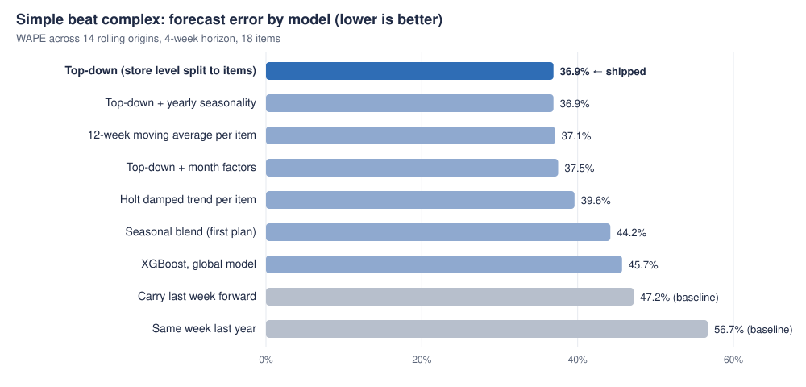
What we found
- Every model that tried to predict movement lost to the one that estimated the level carefully. XGBoost reached 45.7% with only about 1,260 training rows for 18 series.
- About 10 points better than repeating last week, and 20 better than the same week last year. High-volume items forecast at roughly 20–30% error.
- Day of week is the biggest unused signal: Wednesday sells about five times as much as Saturday.
Recommendations
- Stock up for midweek; the weekend is the weakest stretch.
- Build inventory and staffing ahead of September, the peak month.
- Plan downtime for late December to early January.
- Replace habit-based buying with the review and reorder rules.
What comes next
- A daily model with day-of-week features
- Turn seasonality on once two full years of data exist
- Validate the inventory rules against real purchases and waste
- A synthetic scan log so the scanner feeds the dashboard end to end
- Recipe-based ingredient planning for confirmed cake orders
- Online deposits for website orders
Limitations
Sales records show what sold, not what customers wanted when an item ran out. Seasonality needs at least two full years of data. Known events (holidays, large pre-orders) should be entered as adjustments. Custom-order history exists only from the website onward.
Who built what
Built with Python (pandas, NumPy, SciPy, statsmodels, matplotlib), HTML/CSS/JavaScript, Supabase, and ZXing and Quagga2 for barcode reading. Code and full documentation are in the README.